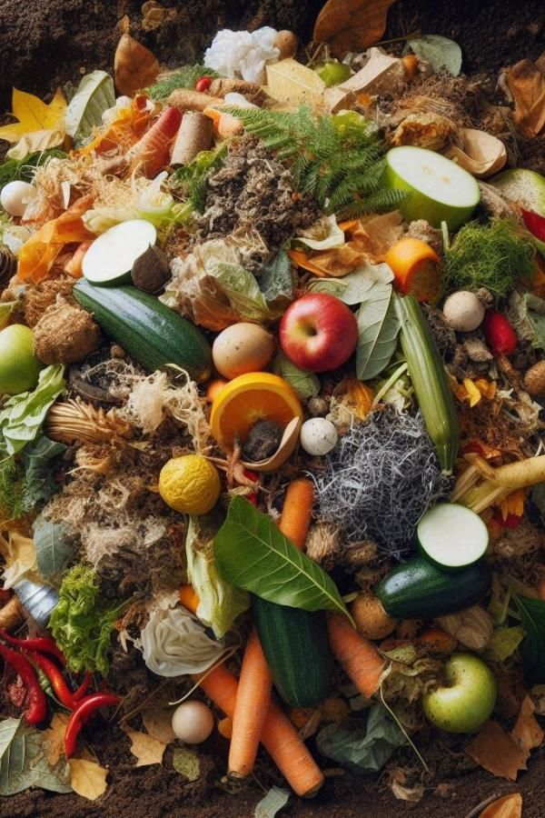
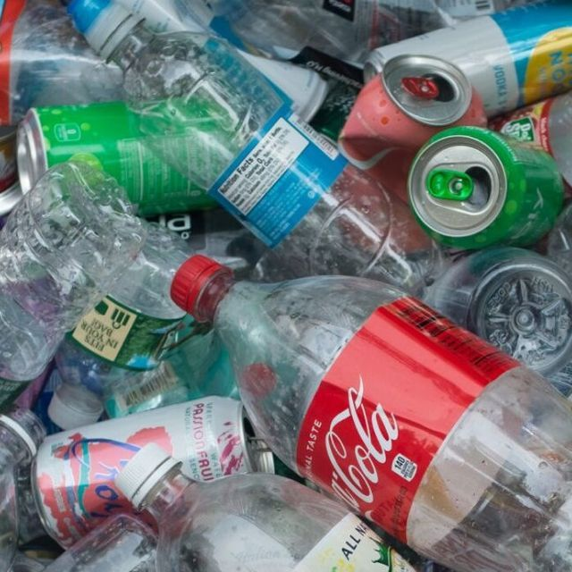
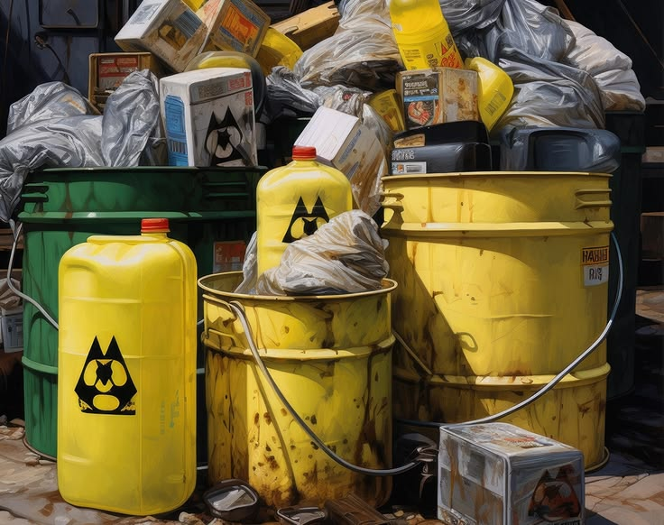

Selamat datang kembali, Tom Edy
Mulai pindai sampah Anda untuk melihat dampak positif yang bisa Anda berikan ke bumi.
AI Waste Scanner
Seret & letakkan foto sampah di sini, atau klik tombol untuk memilih dari perangkat.
Belum Ada Pindaian
Unggah foto sampah di sebelah kiri untuk melihat hasil analisis lengkap beserta estimasi poin.
Riwayat Daur Ulang
Riwayat COâ‚‚ Terhindar
Total Poin Hijau
Waktu Terurai Sampah
Ketahui durasi alami yang dibutuhkan untuk mengurai berbagai jenis sampah.

Sampah Organik
2 - 8 MingguSisa makanan dan daun mudah terurai secara alami menjadi kompos penyubur tanah.

Non-Organik (Plastik)
100 - 500 TahunMembutuhkan waktu ratusan tahun. Wajib dipilah untuk daur ulang agar tak mencemari bumi.

B3 (Berbahaya)
Sulit TeruraiBaterai, elektronik & bahan kimia. Mengandung racun berbahaya bagi lingkungan.
4 Cara Mengatasi Sampah
Terapkan prinsip berkelanjutan ini untuk menjaga kelestarian lingkungan hidup.
Reduce
Mengurangi penggunaan barang sekali pakai dan memilih produk yang dapat dipakai ulang.
Reuse
Memanfaatkan kembali produk yang sudah terpakai, seperti menggunakan saputangan kain.
Recycle
Mendaur ulang sampah anorganik menjadi bahan baku baru untuk produk bermanfaat.
Replace
Mengganti barang-barang yang tidak terlalu diperlukan dengan produk ramah lingkungan.